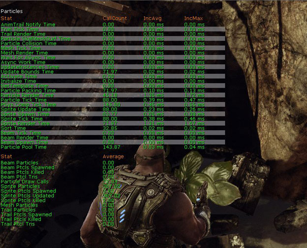

UDN
Search public documentation:
VFXOptimizationConcepts
日本語訳
中国翻译
한국어
Interested in the Unreal Engine?
Visit the Unreal Technology site.
Looking for jobs and company info?
Check out the Epic games site.
Questions about support via UDN?
Contact the UDN Staff
中国翻译
한국어
Interested in the Unreal Engine?
Visit the Unreal Technology site.
Looking for jobs and company info?
Check out the Epic games site.
Questions about support via UDN?
Contact the UDN Staff
UE3 Home > Particles & Effects > Particles Systems > VFX Optimization in UE3 > VFX Optimization: Core Concepts
UE3 Home > FX Artists > VFX Optimization in UE3 > VFX Optimization: Core Concepts
UE3 Home > FX Artists > VFX Optimization in UE3 > VFX Optimization: Core Concepts
VFX Optimization: Core Concepts
Identifying GPU, Render Thread, and Game Thread issues
- launch the game on your console
- hit tab and enter 'stat unit'
STAT PARTICLES command to gauge particle times on the different threads.

STAT PARTICLES lists out multiple statistics relative to Game Thread and Render Thread. Pay attention to Draw Calls (Render Thread) and Tick Time (Game Thread).
Targeting Game Thread related issues
ParticleTickStats command to identify which systems are your main offenders.
The ParticleTickStats command has 3 arguments:
- Single - This argument will capture a single frame and write out a file
- Start - This argument will begin capturing stats
- Stop - This argument will end stats so you can see tick time for a duration
[UE3 Directory]\[YourGame]\Profiling\PSTick-[sys time].csv
The spreadsheet is broken into columns and rows outlining the cost of your effects
- Total Tick ms
- Total time spent ticking all instances that Particle System
- Avg Tick ms
- Avg. time for ticking that Particle System (Total Tick/Ticks)
- Max Tick ms
- The HIGHEST tick time for an instance of that Particle System
- Ticks
- Number of INSTANCES of that Particle System
- Avg Active/Tick
- Avg # of particles active during the Tick of that Particle System (Total Particles/Ticks)
- Max Active/Tick
- Max # of particles active during the Tick of that particle (in a single instance)
- Reduce particle emission counts on the systems being used.
- Reduce the number of particle systems in the scene.
- Reduce lifetime (the amount of time particle evaluation is calculated) for some of your emitters.
- Check expensive calculations such as collision etc. to ensure the settings you are using are optimal, reduce collisions or the amount of particles/meshes colliding.
- Remove expensive calculations such as collision, dynamic parameters, etc. if necessary.
- Replace Game Thread calculated particle effects with static mesh effects if possible.
- Set Fixed Bounds on your particle system so you do not calculate them each frame.
- Increase LodDistanceCheckTime so you are checking LODs less often (for looping effects with LODMethod set to automatic.)
Using Unreal Front End to launch the build on console
Unreal FrontEnd can be found in your projects binaries folder[UE3 Directory]\Binaries\UnrealFrontend.exe
Unreal Front End is a GUI which allows any discipline to quickly cook and deploy a build or a level to see the results of local data on a target platform. Unreal Front End also can be used as a launching point for your project, with links to the editor and many other tools. See UnrealFrontend for more information on using this tool.
In relation to effects performance we are going to be focusing on using two parameters when launching the game to get a relatively accurate gauge of how well the game is running. In the Launch Options box the commands -novsync, -noverifygc, and -noailogging.
-novsync disables vertical sync (locking fps @ 30) so we can see how much overhead there is in the scene, -noverifygc disables periodic garbage collection which produces a visible hitch every so often, and -noailogging disables ai logging which slows the game considerably, aiLogging and garbabge collection run in the background and slow performance when enabled. Disabling these will give a closer reproduction of actual frame rate in a final release build, minus disc load time.
When doing any of this testing in a debug build, it is important to remember there is a cost to running the game in debug which will not be visible in a final release build. Using tools like the stat overlays have a cost and will cause your results to be skewed slightly.
Troubleshooting batches of FX
ParticleSystemAudit
This commandlet will perform an audit on all particle systems that are contained in the database resulting from MineCookedPackages. NOTE: This will be changed to use the 'On DVD' tag, as well as simply checking all existing particle systems. It will generate csv files containing the following to assist in optimizing/fixing content:- All particle systems w/ NO LOD levels
- No LOD levels means the particle system is 'empty'.
- All particle systems w/ a single LOD level
- These systems should be reviewed to ensure they are not environmental (level placed) effects. In those cases, you typically want to utilize LODs to turn off emitters in the distance.
- All particle systems w/out fixed bounds set
- All particle systems that can should leverage the fixed relative bounds.
- All particle systems w/ LOD Method of Automatic & a check time of 0.0
- This indicates a scenario where the particle system will perform its LOD check every frame.
- All particle systems w/ bOrientZAxisTowardCamera enabled
- These systems will cause problems if your game will support split-screen.
- All particle systems w/ missing materials
- These systems will render with the default material.
- All particle systems w/ no emitters
- These systems are 'empty' - should they be deleted?
- All particle systems w/ collision on in at least one emitter
- Current collision methods are a VERY high cost operation for particles.